When Simeon Frank Vining was born on December 16, 1893, in Elmer, Sanilac County, Michigan, his father, Murray, was 25 and his mother, Lilly, was 21. In 1900 he was 7 years old and still living in, or near, Elmer; his father was a farmer. By 1910, when he was 17, they had moved to Columbus Township, in Luce County. He married Lena Farrow on June 2, 1914, in Flint, Michigan [see wedding photographs below]. In 1916 they lived at 301 Helen in Flint and he was employed as a toolmaker [see Flint, Michigan, City Directory entries below]. In 1917 he was working at Buick in Flint and living at 1510 Donald St. In 1924 they were living at 237 Mary Street in Flint and stayed there until about 1945, when they moved to 245 Mary Street, which is his last known address. He had three children (Agnes, Joyce, and Helena; [see photograph below]) by the time he was 28. In 1941 he was working at Marvel-Schebler Carburetor. In retirement, Simeon built a camper to place in the bed of a Dodge pickup truck, and he and Lena toured the US visiting the National Parks. He also built a cabin on Van Ettan Lake in Michigan's Iosco County that he and the family enjoyed for many years. They also had a small retirement home in Bonita Springs, Florida, for the winter months. He died on January 25, 1967, in Flint, Michigan, at the age of 73, and was buried in Gracelawn Cemetery there [see gravestone images below].
—contributed by Mike Smith (grandson of Simeon Frank Vining)
Wedding Photographs
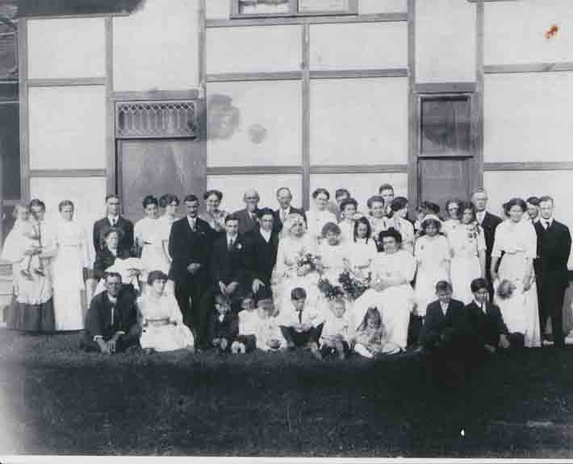
40th Wedding Anniversary Photographs
Draft Registration Cards
World War I: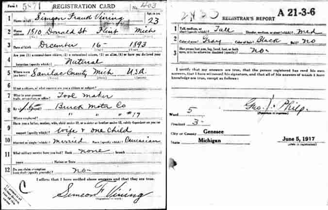
Census Data
| 1920 | 1930 | 1940 | |
| Simeon Frank Vining | 26 | 36 | 46 |
| Maggie Lena (Farrow) Vining | 25 | 35 | 45 |
| Agnes Lillian Vining | 3 y., [?] m. | 13 | living in separate household |
| Joyce W. Vining | 1 y., [8?] m. | 11 | living in separate household |
| Helena Mae Vining | 7 | 17 |
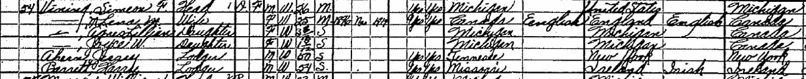
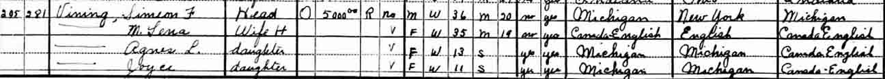
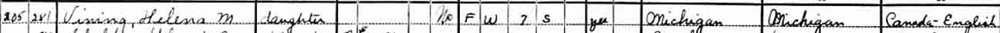
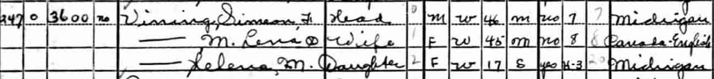
Family Photographs
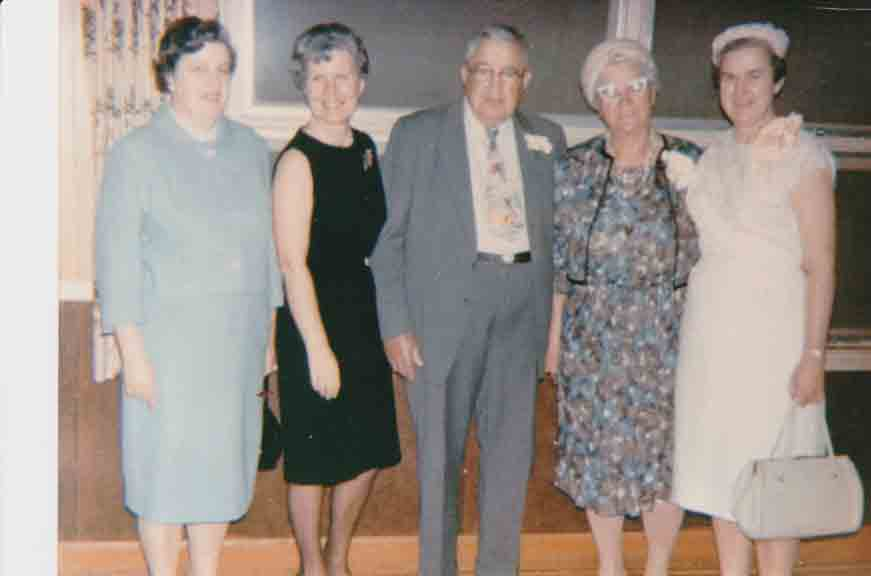


Flint, Michigan, City Directory entries
1915–1916: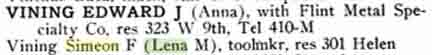
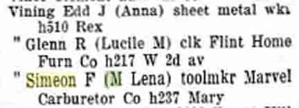
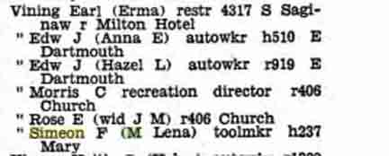
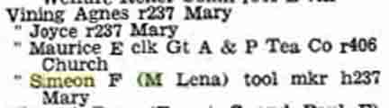
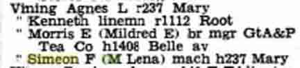
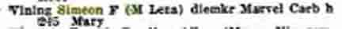
Death Data
Cemetery lot for Simeon Frank Vining and Maggie Lena (Farrow) Vining, in Gracelawn Cemetery, Flint, Michigan: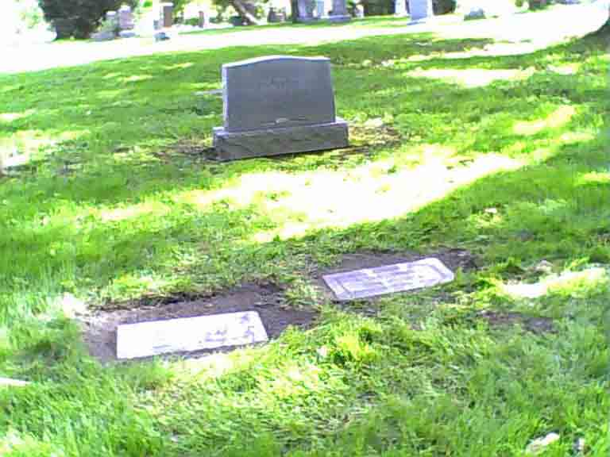
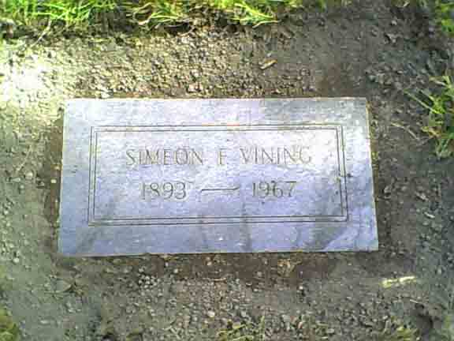
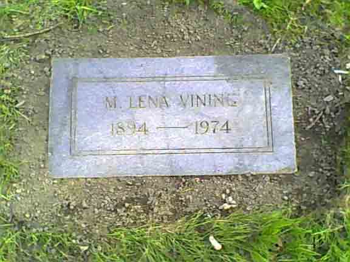